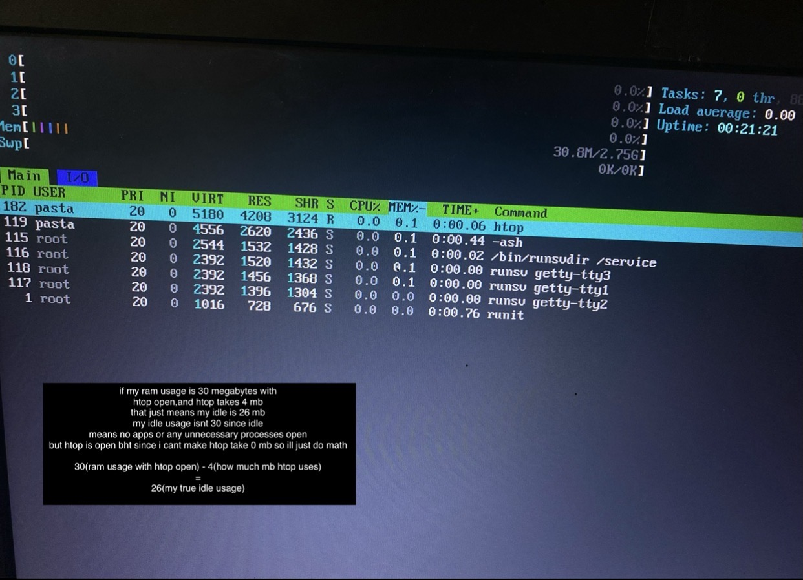

mite linux is a linux distro i made using the linux from scratch guide
https://linuxfromscratch.org
its using runit and busybox,i use 26-34 mb on ram usage idle
i named my distro after my cats name mite,im considering renaming this distro after my beatiful girlfriend chiara though ❤️
